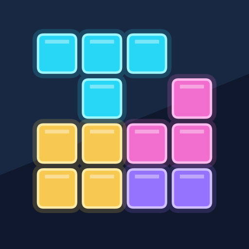

01Join the tester group
Open Google Groups and choose “Join group”. If you are already a member, continue to step 2.
Join the group
Google Play · Android
Falling blocks. Neon colours. One more try.
Help us test the game before its public release.
Open Google Groups and choose “Join group”. If you are already a member, continue to step 2.
Join the groupChoose “Become a tester”, then follow the Google Play link to install the game. Already installed? You still need to opt in to this closed test.
Open the Google Play testPlease stay opted in for at least 14 consecutive days, play regularly and tell us what works or needs fixing. Testing is voluntary. The current test version does not show ads.
Check that you have joined the group using the Google account selected in the Play Store. New access may take a little time to appear. If you are enrolled in the internal test, leave that test before joining the closed test. For help, email studioneonblocks@gmail.com.
Padajúce bloky. Neónové farby. Ešte jeden pokus.
Pomôž nám otestovať hru pred verejným vydaním.
Otvor Google Skupiny a zvoľ „Pripojiť sa ku skupine“. Ak už členom si, pokračuj druhým krokom.
Pridať sa do skupinyZvoľ „Stať sa testerom“ a cez následný odkaz nainštaluj hru z Google Play. Aj keď už hru máš, musíš potvrdiť účasť v tomto uzavretom teste.
Otvoriť test v Google PlayZostaň, prosím, zapojený aspoň 14 dní bez prerušenia, pravidelne si zahraj a napíš nám, čo funguje alebo treba opraviť. Testovanie je dobrovoľné. Aktuálna testovacia verzia nezobrazuje reklamy.
Skontroluj, že si v skupine pod rovnakým Google účtom ako v Obchode Play. Nový prístup sa môže prejaviť s oneskorením. Ak si zapojený do interného testu, pred vstupom do uzavretého testu z neho vystúp. Pomoc: studioneonblocks@gmail.com.